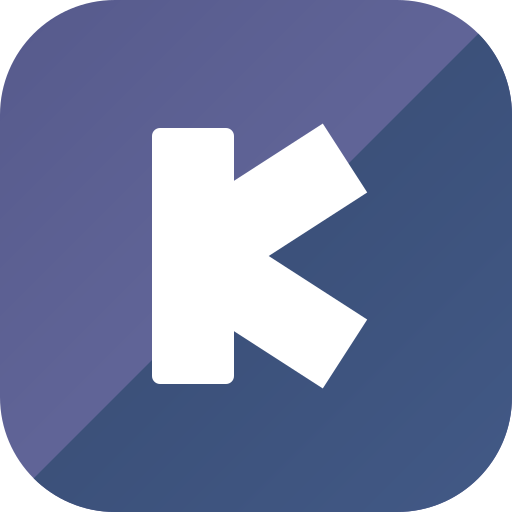
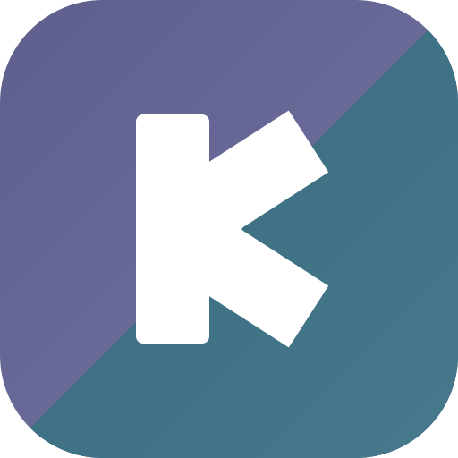
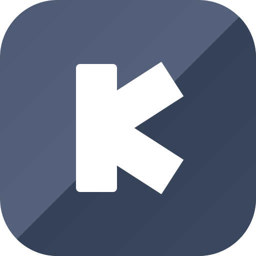

V1 暮靛
V2 青瓷
V3 石墨
V4 岚
 原版 C（扎眼）
原版 C（扎眼）保留原版「紫 = Design、蓝 = Code」的叙事，饱和度压到约三成，像黄昏时分的靛蓝。双色可辨又足够安静，与全灰的界面最协调。

紫灰保留给 Design，Code 半边换成青瓷蓝绿，两半色相差更大、层次更清楚，整体依然低饱和，带一点清新感。

近乎单色的高级灰蓝，最低调的一版，气质接近 Vercel / Linear。代价是「双色」的叙事几乎不可见，只剩对角线的微妙深浅。

同一个靛蓝色相只靠深浅分两半，最含蓄的双色。比 V3 多一点颜色温度，比 V1 更收敛，适合想要「隐约可见双色」的效果。
原版 C（扎眼）apps/web/public/logo.svg 与 favicon.svg，同步生成 Tauri 桌面端各尺寸图标；色值还可以在选定变体上继续微调（更灰一点 / 更亮一点都行）。